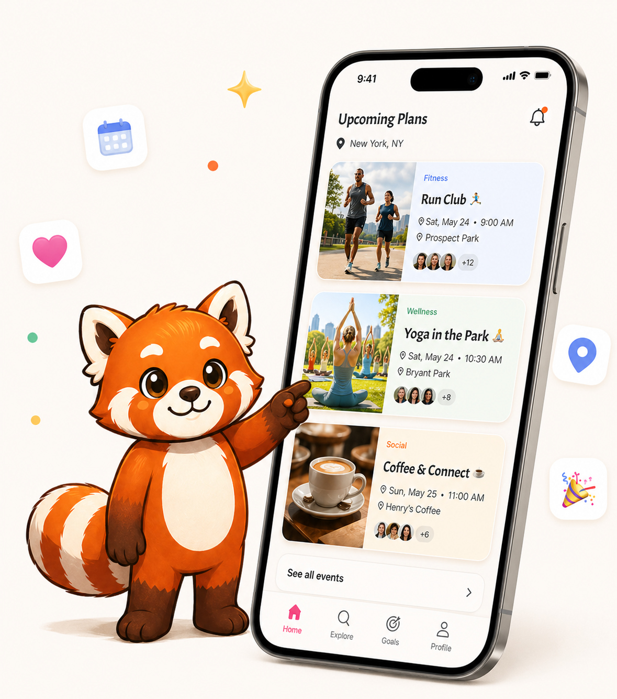
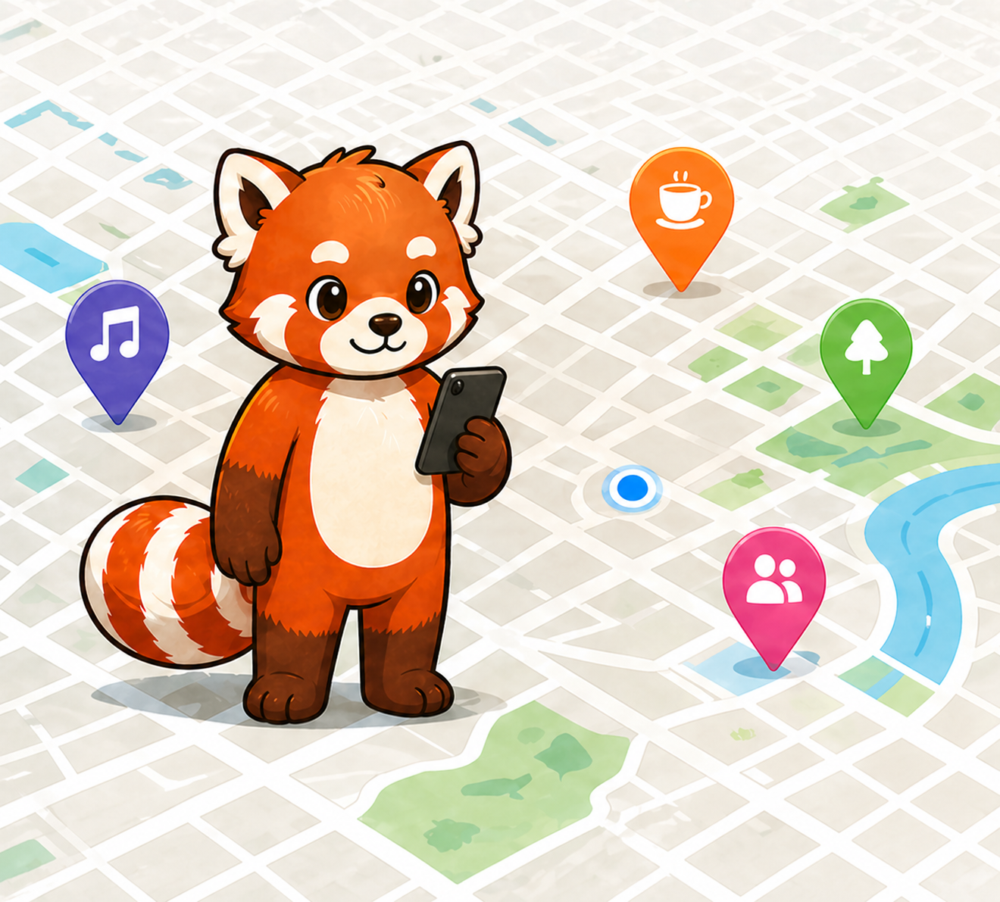

of U.S. teens say they are online almost constantly.
Pew Research Center, 2024Stop scrolling. Start finding your people.
Real friendships aren't built in one night - they're built by showing up to the same place, week after week. Sammy finds the recurring spots near you where your kind of people already gather, then nudges you to keep coming back until familiar faces become your crew.

more time spent alone each month from 2003 to 2020.
U.S. Surgeon General advisoryless in-person time with friends for ages 15 to 24 over nearly two decades.
U.S. Surgeon General advisory
How it works
Turn "I should get out more" into actual plans.

-
01
Tell Sammy what you want more of.
Confidence, friendships, healthier habits, new skills, happiness, or just a better reason to leave the house.
-
02
Get plans that fit your life.
Sammy finds local activities and events that match what you're into, where you are, and what you're ready to try next.
-
03
Save a plan. Actually go.
Add it to your calendar, get timely reminders, and check in afterward so one good plan turns into real momentum.
Early users
What we've heard:
"The recommendations are amazing now I actually have fun things to try and a simple reason to leave the house. Hey Sammy helps me find activities that fit what I want to work on, then nudges me to actually go instead of just thinking about it. I finally feel like I'm building a fuller life on purpose. im very impressed :)"
Ellie"Where was this when I was in school? Having one place to find things to do, save plans, and get a little push to show up makes a huge difference. It feels like Sammy is on my side, helping me try new things and meet people without making it feel awkward or forced."
Jeremy"Hey Sammy has been spot on at helping me turn 'I should get out more' into real plans I can actually follow through on. The activity suggestions, reminders, and post-event check-ins make it way easier to stop scrolling, try something new, and feel like I'm actually making progress."
EliseBuild a fuller life on purpose.
Download Hey Sammy and put one real thing on your calendar this week.